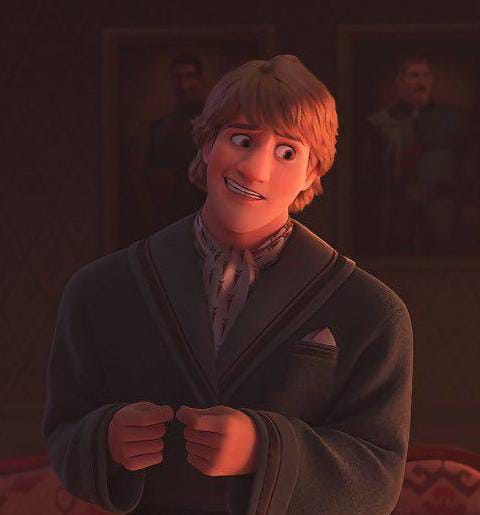
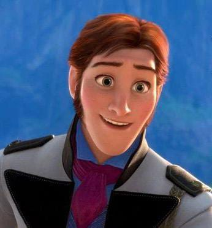
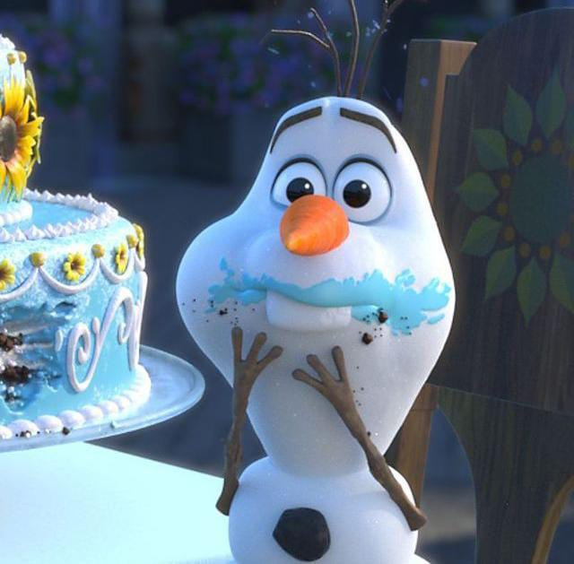
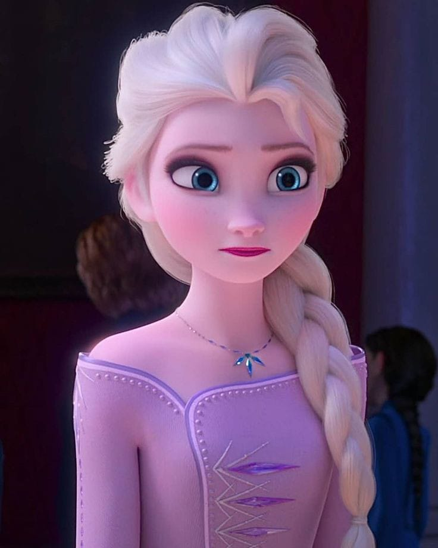

|
|
ANA |  | KRISTOF |  | HANS |  | OLAF | |
RUSA | |
ELSA |  | |
Suatu ketika, Elsa bermain dengan adiknya, Anna dengan kekuatan sihir yang dimilikinya dan tak sengaja melukai Anna.
Raja dan Ratu Arendelle kemudian membawa Anna ke koloni troll yang dipimpin oleh Grand Pabbie.
Mereka berhasil menyembuhkan Anna, tapi membuatnya lupa tentang kekuatan sihir yang dimiliki oleh Elsa hingga beranjak dewasa.
Sejak saat itu, Raja dan Ratu Arendelle mengurung kedua putrinya di istana dan memisahkan keduanya agar tidak saling bertemu tatap muka
untuk menghindari kecelakaan yang mungkin terjadi akibat kekuatan sihir Elsa.
Ketika mereka beranjak dewasa, Raja dan Ratu Arendelle meninggal karena tenggelam diterjang badai besar saat berlayar.
Hal ini membuat Elsa harus naik menjadi Ratu Arendelle menggantikan kedua orang tuanya.
Pada hari penobatannya, datanglah sejumlah perwakilan dari kerajaan-kerajaan lain,
termasuk Pangeran Hans yang berhasil membuat Anna jatuh cinta pada pandangan pertama
Hans pun langsung melamar Anna, namun Elsa tidak setuju.
Ketika Anna protes, kekuatan sihir Elsa tidak sengaja keluar dan membuat publik ketakutan.
Elsa yang tidak percaya diri langsung melarikan diri ke Gunung Utara dan membangun istana dari es di sana.
Namun tanpa sadar, kekuatan sihir yang digunakannya membuat Kerajaan Arendelle harus menghadapi musim dingin abadi.
Anna yang ingin memperbaiki hubungan dengan Elsa mengejarnya ke Gunung Utara.
Dalam perjalanannya, Anna bertemu dengan Kristoff dan rusa kutubnya, Sven.
Kemudian bertemu juga dengan Olaf, manusia salju yang dapat berbicara dan menuntunnya ke istana baru Elsa.
Ketika sampai di istana tersebut, Anna rupanya tidak mampu membujuk Elsa untuk kembali ke Kerajaan Arendelle karena takut dianggap monster dengan kekuatan sihirnya.
Penolakan itu tak sengaja membuat Elsa mengeluarkan kekuatan sihirnya dan mengenai Anna lagi.
Kali ini, tubuh Anna mendadak menjadi dingin dan hampir beku. Kristoff, Sven, dan Olaf pun membawa Anna ke koloni troll yang rupanya akrab dengan Kristoff.
Grand Pabbie pun berusaha menyembuhkan Anna, namun menurutnya hanya cinta sejati yang dapat menyelamatkan Anna.
Mereka pun segera kembali ke Kerajaan Arendelle karena mengira Anna harus bertemu dengan Hans cinta sejatinya.
Namun ketika sampai di Kerajaan Arendelle, Hans rupanya mengungkap rencana jahatnya yang sengaja menipu Anna dan ingin menyingkirkan Elsa agar dapat menguasai Kerajaan Arendelle.
Hans justru meninggalkan Anna yang hampir beku. Beruntung Olaf berhasil menemukan Anna dan segera menghidupkan perapian agar Anna tidak beku.
Setelah Anna sedikit membaik, Olaf membawanya ke Kristoff karena mengira bahwa cinta sejati Anna bukanlah Hans melainkan Kristoff yang tulus membantunya.
Namun ketika Anna mencari Kristoff, pedang Hans mengenai Anna yang semula dialamatkan ke Elsa. Anna pun jadi beku.
Elsa yang murka langsung mengeluarkan kekuatan sihirnya kepada Hans.
Tak lama berselang, Anna kembali lagi seperti sedia kala. Rupanya, cinta sejati Anna adalah kasih sayang dari kakaknya, Elsa.
Mereka pun kembali hidup rukun di Kerajaan Arendelle. Anna dan Kristoff pun memulai hubungan baru mereka.
Film favorit lainnya
Syifa setiawati